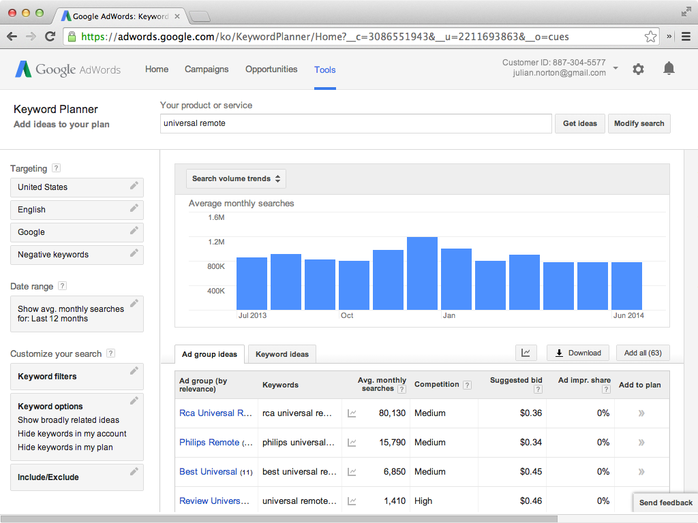

How could a mobile app replace traditional remotes?
With a stereo, cable box, TV, and dvd player, you'd have to switch between four remotes. That’s crazy.

Now people can do everything from adjust their home's temperature, to summoning a black car for transport. People are becoming more comfortable using a single mobile devices to control the world around them. TV remotes are archaic, overcomplicated, and a TV control app would put less between them and their content.
Survey the prospective audience
I had 30 people, through mechanical turk, take a Typeform survey.
 View the results
View the results
People generally talked about four different things
- 100% of people had a TV in their home
- 96% of people watched TV within the last week
- 30% of people used at least two remotes

Mental model
For somenoe who has a TV and smartphone, who doesn’t want to deal with multiple TV remotes. A single, universal app that can control all of the devices my TV works with.
Competitors
Roomie
 Control your home theater components supporting thousands of devices
Control your home theater components supporting thousands of devices
Peel
 Experience personalized TV, with recommendations just for you!
Experience personalized TV, with recommendations just for you!
Logitech
 The world’s largest remote control compatibility databases with over 225,000 home theater devices.
The world’s largest remote control compatibility databases with over 225,000 home theater devices.
Google ad words
Persona
Jim lives in the suburbs of long island and recently got a cable-subscription for his new TV. He is frustrated by the number of removes he has to use. One to power the system on and volume, and the other to change the channels on the cable box. He has to use a third remote to use his DVD player.
Use cases
- Bought a TV and cable subscriptions and setting up for the first time
- Integrating existing multiple remotes into a single app
- I want to turn on my tv, switch to dvd, and play a movie, and control the audio from one app